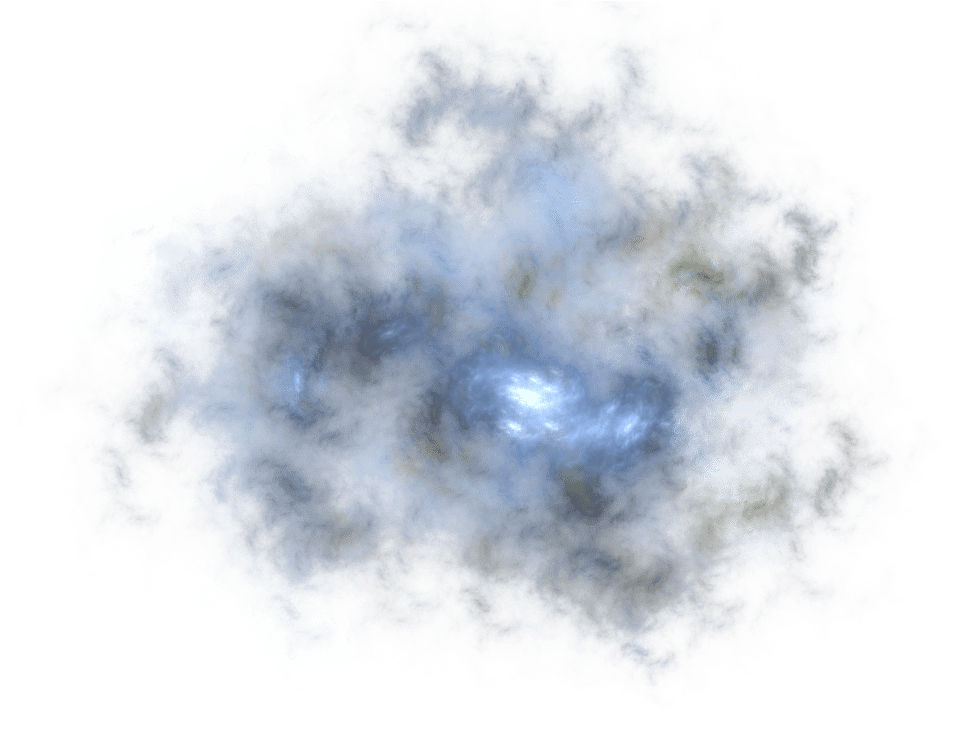

Nebulosas são grandes nuvens encontradas no espaço interestelar formadas, majoritariamente, de poeira cósmica e gases, como hélio e hidrogênio. Algumas nebulosas surgem a partir da explosão de estrelas massivas e que se encontram no ciclo final de suas vidas.
A poeira cósmica que compõe esses corpos celestes pode aglutinar-se pela ação gravitacional. Assim, a união dos materiais que formam a nebulosa pode dar origem à formação de uma estrela. Por esse motivo, as nebulosas são chamadas de berços de estrelas.
Nebulosas de emissão são grandes massas de gases excitados devido a altas temperaturas. Geralmente, apresentam núcleos quentes que emitem radiação ultravioleta, responsável por excitar as porções mais frias de gás que, quando resfriado, emite luz visível. As nebulosas de emissão são compostas basicamente por hidrogênio, por isso, apresentam uma coloração avermelhada, característica desse gás. São as nebulosas mais visíveis do céu noturno.
As nebulosas escuras ou opacas são bastante visíveis até mesmo da Terra. Esse tipo de nebulosa produz regiões escuras que apresentam bastante contraste com o brilho das estrelas da Via Láctea. As nebulosas escuras são chamadas de nuvens moleculares, uma vez que, diferentemente dos outros tipos de nebulosas, em seu interior há grandes quantidades de gases moleculares, tais como as moléculas H2 e He2. Esses gases fazem com que a opacidade dessas nebulosas bloqueie a luz de outras estrelas e nebulosas vizinhas.
As nebulosas de reflexão, também conhecidas como nebulosas difusas, não são quentes o suficiente para provocar a ionização do gás que as compõe, por isso, só são visíveis ao refletir a luz incidente sobre elas. É comum que as nebulosas de reflexão formem-se nas proximidades de nebulosas de emissão. Nessas nebulosas, é comum encontrarmos traços de elementos mais pesados, como o carbono e até mesmo o ferro.
As nebulosas planetárias são nebulosas de emissão cujo formato confundia alguns dos primeiros astrônomos que utilizavam instrumentos de observação rudimentares. Esse tipo de nebulosa tem origem na ejeção de massa das estrelas gigantes vermelhas de massas intermediárias. Essas estrelas não são massivas o suficiente para produzir supernovas, por isso, no final de suas vidas, passam a fundir o elemento hélio em seu núcleo, dando origem aos átomos de carbono e oxigênio. O núcleo dessas estrelas passa a ficar cada vez mais comprimido e quente. Isso faz com que ele emita uma grande quantidade de radiação, e a estrela passa a ejetar uma grande parte de sua massa na forma de ventos estelares, dando origem à forma inicial da nebulosa planetária.